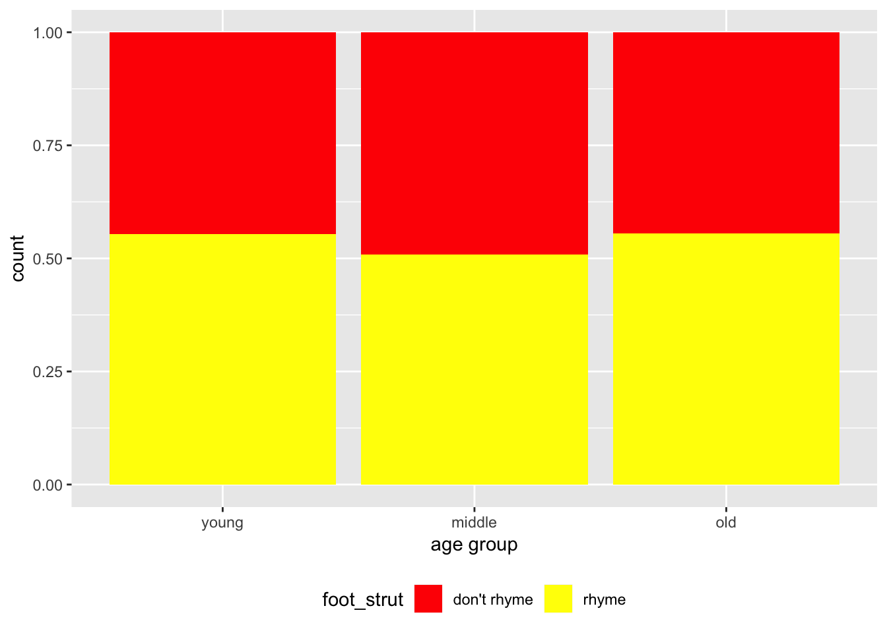

You can download the R notebook code (the output of which is this document) at the link by right clicking here and choosing save link/target as. Store it in the same folder as last time.
You should already have the dialect data downloaded, but if not you can find it here and choosing save link/target as.
This is an R Markdown Notebook. When you execute code within the notebook, the results appear beneath the code.
Try executing this chunk by clicking the Run button within the chunk or by placing your cursor inside it and pressing Cmd+Shift+Enter.
1+3## [1] 4Add a new chunk by clicking the Insert Chunk button on the toolbar or by pressing Cmd+Option+I.
When you save the notebook, an HTML file containing the code and output will be saved alongside it (click the Preview button or press Cmd+Shift+K to preview the HTML file).
The preview shows you a rendered HTML copy of the contents of the editor. Consequently, unlike Knit, Preview does not run any R code chunks. Instead, the output of the chunk when it was last run in the editor is displayed.
You can Knit your document to pdf and Word too.
Today, we’re to go over some basic info on operators such as:
and then revisit some of our table summaries from earlier this week. Then we’ll make some plots.
The first thing we want to do, as usual, is load in the relevant packages for today. The following code should do the job:
## LOAD PACKAGES ####
library(dplyr) # this is a package that makes handling data easier##
## Attaching package: 'dplyr'## The following objects are masked from 'package:stats':
##
## filter, lag## The following objects are masked from 'package:base':
##
## intersect, setdiff, setequal, unionlibrary(ggplot2) # this is a package that makes nice graphsYou might see some messages, but that is fine.
Again, if this doesn’t work, you may need to install the packages. You only have to install a package once, but you have load a package in (like we just did above) every time you open R. To install a package for the first time, you can go to ** tools > install packages… >** and then search for the name of the package. You can also run it directly through the console by inputting install.packages("dplyr").
You should have saved the data itself in the same folder as this R Notebook document. That means we can easily load it in without having to specify the full path (i.e. location) of the document. Try pressing play on the chunk below to read in the data:
## LOAD IN DATA ####
dialect_data = read.csv("HSS8005_dialectdata.csv")We have called our dataset dialect_data and we should now be able to see it in the right corner panel under Environment as one of the things we have loaded in.
Let’s do our usual checking:
dim(dialect_data)## [1] 6596 34Let’s have a look at the top six rows:
head(dialect_data)How about the bottom six?
tail(dialect_data)What are the names of the columns?
colnames(dialect_data)## [1] "sex" "occupation" "age" "age_group"
## [5] "town" "postcode_birth" "postcode_now" "bread"
## [9] "furniture" "clothing" "evening_meal" "group"
## [13] "foot_strut" "for_more" "one_gone" "book_spook"
## [17] "fur_bear" "sauce_source" "pour_poor" "eight_ate"
## [21] "bangor_banger" "mute_moot" "spa_spar" "thin_fin"
## [25] "give_it_me" "I_done_it" "it_was" "you_was"
## [29] "beaches_was" "I_werent" "they_was" "we_was"
## [33] "dress_what" "things_what"Let’s say we want to see how many of our respondents have said that “foot” and “strut” rhyme, and how many say they don’t. We can do this easily using the table function in R. Note that we use the dollar sign $ again to denote the specific foot_strut column within the dialect_data dataset.
table(dialect_data$foot_strut)##
## don't rhyme rhyme
## 3029 3567This would be our dependent variable, but can we think of a possible independent variable we’d want to look at too? We can add this in simply by adding another instruction to the table. Let’s try this with speaker age group (categorical):
table(dialect_data$foot_strut, dialect_data$age_group)##
## middle old young
## don't rhyme 956 475 1598
## rhyme 990 593 1984Note, we also have the specific speaker age (continuous), but that’s going to be difficult to visualise in a table, so we’ll leave that for now.
Try this below for a different independent variable of your choice:
#your code here for your choice of independent variableThese numbers are not ideal in terms of presenting a result to our audience. We really want to be showing them the percentage of speakers who say rhyme and don’t rhyme, rather than the raw numbers. How can we do this?
There are always numerous ways to do things in R. Sometimes, I’ll use the functions that come installed with basic R, other times I’ll be showing you additional packages that we can install that will make our lives easier.
The first step to making a proportional table would be saving our current table as a variable in R.
foot_strut.tab = table(dialect_data$foot_strut, dialect_data$age_group)Once you run this code, you should be able to see your new foot_strut.tab in the right hand corner environment window. I like to call it R’s brain. You have now saved foot_strut.tab in R’s brain and you can call it up whenever you want during the session. Let’s try it now by running the code below:
foot_strut.tab ##
## middle old young
## don't rhyme 956 475 1598
## rhyme 990 593 1984Note that I have given it a .tab at the end of its name. Once you get going, you’ll have potentially hundreds of things stored in R’s brain. So by giving them names with .tab on the end for tables or .plot on the end for plots, you’ll make life a bit easier for yourself in the long run.
OK, so how do we make a percentage table, or a proportional table? We can do this with the prop.table function:
prop.table(foot_strut.tab, 2) ##
## middle old young
## don't rhyme 0.4912641 0.4447566 0.4461195
## rhyme 0.5087359 0.5552434 0.5538805This gives us the breakdown in percentages. Is the foot_strut variable changing over time between old, middle and young people’s speech?
Let’s save this in R’s brain:
foot_strut.prop.tab = prop.table(foot_strut.tab, 2) What does the ,2 bit mean at the end of the call though? This tells R to divide the proportions using the second variable of the table call, not the first. That is, we want to divide each value by the total of the young, middle and old columns, and not by the don’t rhyme/rhyme rows. We always want to divide by the independent variable. Why is this?
Take a look at what happens when you try to divide by the first variable of the table call:
# WRONG WAY AROUND
prop.table(foot_strut.tab, 1) ##
## middle old young
## don't rhyme 0.3156157 0.1568174 0.5275669
## rhyme 0.2775442 0.1662461 0.5562097What is wrong with this?
This is a very important thing to remember. We want the independent variable column to be the one that adds up to 100%, to ensure that in cases like these where we have many more participants in one category (young) than another (old) our proportions work our correctly.
Note that, if our original table call had put age_group before foot_strut, the number would actually be 1. It’s whatever position the independent variable is in.
Ideally, the table you’ll present to your reader will have percentages in, but also a row below with the totals for each column.
dplyrdplyr is an R package which makes it very easy to look at summaries of data. Even though some people consider it more advanced, I think it’s a good idea to introduce beginners to it from the start. We’re going to try to do the same using this package.
We already loaded it in at the start, but if you hadn’t have done that by now, the following code would not work. Always make sure you’ve run the line library(dplyr) at the beginning of each session to run this kind of code.
dplyr makes regular use of this set of symbols, which it calls the pipe: %>%. This signifies to R that you haven’t finished with your code yet, and it needs to look to the next line to figure out what’s happening next. It’s piping the code to the next line. If you get an error message about the pipe %>%, it probably means you haven’t loaded in dplyr.
dialect_data %>%
group_by(age_group) %>% # the independent variable
count(foot_strut) %>% # the dependent variable
mutate(prop = prop.table(n))Can you see how this package allows us to do the same thing as we did before, but a bit quicker?
Create a chunk below and try creating some other summaries in dplyr. First, let’s create a summary for another independent variable of foot_strut:
# here you can look at another independent variable's affect on foot_strutNow let’s try a different independent and dependent variable. Insert a new chunk below:
We’ve seen in this section that there’s always (at least!) a couple of ways to do things in R. In the next section we’ll look at making some plots, starting off with the R base graphics, and moving on to some more advanced packages which look more difficult at the beginning, but actually make life easier in the end, and produce much nicer looking plots.
Let’s try making a plot of the foot_strut variable. We can use Base R’s barplot function to do this, and it’s useful that we’ve already made tables of the frequencies and proportions.
We could just plot the raw frequencies, but this isn’t very helpful:
barplot(foot_strut.tab)This graph looks quite rubbish. It’s unclear what the trend is, as our sample is so biased towards young people. Also, it’s annoying for us that R automatically plots factor levels in alphabetical order, because it puts the middle aged group at the front. We’ll come to that in a bit.
Firstly, can you try plotting the proportions instead of the frequencies? Try it in the chunk below, and shout me if you get stuck.
#create a barplot with the proportions of foot_strut instead of raw numbersCan we get it so that it goes in order of age group? Let’s take a look at the factor levels of age_group using the levels function:
levels(dialect_data$age_group)## [1] "middle" "old" "young"Can you see that they are in alphabetical order? We can change the order of these levels. Again, there are many ways to do this. We’ll be looking at how you do it in 1) base R and 2) dplyr. Firstly, we’ll look at how you do it in base R. In the chunk below, I’ve actually created a new variable called age_group_ordered. You don’t have to do this usually, you can just re-specify the order of age_group. However, I want to keep the old order to show you how to reorder in dplyr too. Saying that, sometimes, if you’re not sure of what you’re doing, it’s better to avoid writing over the old.
Let’s reorder the factor levels:
# reordering
dialect_data$age_group_ordered = factor(dialect_data$age_group,levels(dialect_data$age_group)[c(3, 1, 2)])
#having a look at new order
levels(dialect_data$age_group_ordered)## [1] "young" "middle" "old"Try the plot again with the new order by creating a chunk below:
ggplot2Not only do ggplot2 plots look prettier and are easier to customise, we can also combine them with dplyr code to make data changes efficiently. Both packages are written by Hadley Wickham, whose R style guide we discussed earlier in this course.
The package to make ggplots is called ggplot2. Remember the 2 when you load in the package, otherwise it won’t work. We already loaded it in before, but you’ll need to do that each time you start R by calling library(ggplot2).
The plot call initially looks a lot more complicated. But gg stands for grammar of graphics, and as you get used to using it, you’ll realise it’s much easier to switch between different kinds of graphs, and customise the look of them.
Let’s try a barplot for foot_strut and age_group in ggplot2:
r ggplot(dialect_data, aes(age_group_ordered, fill = foot_strut)) + geom_bar()
This has given us the frequencies. Again, it’d be better to see the percentages, rather than the raw numbers. We can do this easily by adding position="fill" to the geom_bar() bit:
ggplot(dialect_data, aes(age_group_ordered, fill = foot_strut)) +
geom_bar(position="fill")The beauty of ggplot is that you can just stack up command after command using the + symbol to customise your plot.
I can change the x axis title:
ggplot(dialect_data, aes(age_group_ordered, fill = foot_strut)) +
geom_bar(position="fill") +
xlab("age group")I can move the legend to the bottom:
ggplot(dialect_data, aes(age_group_ordered, fill = foot_strut)) +
geom_bar(position="fill") +
xlab("age group") +
theme(legend.position = "bottom")I can change the colours:
ggplot(dialect_data, aes(age_group_ordered, fill = foot_strut)) +
geom_bar(position="fill") +
xlab("age group") +
theme(legend.position = "bottom") +
scale_fill_manual(values = c("red", "yellow"))
Try changing the colours yourself in the chunk below:
#my ggplot with new coloursIn fact, if you’re bad at choosing which colours go together, there are many in built colour palettes that you can use. A list can be found here alongside the colour names that R accepts.
Let’s try a palette. I’m going to try Set1 from the above link. Try messing around with it to get a colour scheme you like.
ggplot(dialect_data, aes(age_group_ordered, fill = foot_strut)) +
geom_bar(position="fill") +
scale_fill_brewer(palette="Set1") Try creating a plot from scratch using a different dependent variable. Our phonological variables are pretty orderly- they only have two factor levels, or variants. How do things start to look with some of our syntactic variables, or lexical? Try to make three plots: one new phonological, one new syntactic and one new lexical.
Once you’ve done that, you could look at other things that you can play around with in the settings of ggplot2. Here you can find the ggplot cheat sheet.
Next week, we’ll be looking at how to automatically save figures to pdf.
Open up a blank RStudio script by going to File > New File > R Script…. Save it as HSS8005_session1_script in the same folder as your other files.
Try retyping (or copy and pasting) all of the commands you’ve run above and getting them to work in your own document, instead of relying on this workbook. Execute the command by clicking Run or typying Command + Enter.
You can convert this entire notebook into a pdf, html or Word document by going to the little triangle drop-down menu next to Preview and choosing one of the Knit to… options. This is how I’d like you to submit your assessment for class, but it is also handy for writing up your quantitative work, as your R code is embedded in your document.
As you start to publish your work, you won’t want the R code itself to show, but just the output. This is easy to do by setting the option echo = FALSE. Try previewing the document, or knitting the document to pdf, html or word, and compare the chunk below with earlier ones:
## [1] 4Can you see this stops it from replicating the code?
Markdown is a very simple language. You use stars for italics, and you use double stars for bold. Hashes indicate new sections and the level of that section (i.e. two hashes are a subsection). Check out the R markdown cheatsheet here. You can see I just made a clickable link in the previous sentence. Have a look at what that looks like in your knitted output. For your next task, have a play around with different options in R markdown.